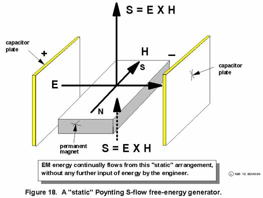

|
A Simple, Cheap Free Energy Generator -- But How Do You Collect and Use the Energy? Let us make very clear that extracting energy from the vacuum is very easy. We will use a device which can be built for a dollar. Take a charged capacitor, and lay it on top of a permanent magnet so that the E-field of the capacitor is at right angles to the H-field of the magnet. Then the standard Poynting flow S is given by S = ExH, which in this case is maximized for a 90-degree angle between E and H. In fact, the magnitude S of S is just the product of the two magnitudes E and H. The direction of S is at right angles to both E and H, and given by the usual right hand rule. Well, even by orthodox theory, that is an actual Poynting energy generator. It just sits there and pours out free energy, directly extracting it from the vacuum. There are two dipoles -- one electrical and one magnetic -- continuously serving as an asymmetry in the fierce vacuum flux. Once you pay to make the permanent magnet and charge the capacitor (or use an electret), that simple gadget will extract energy from the vacuum and pour it out indefinitely. This illustrates how easy it is to extract energy from the vacuum. However, it comes out in nondivergent or difficult-to-use form. So the problem is to intercept and divert a substantial portion of it, or convert a substantial portion of it into a usable form. That is the problem that the DOE should be working on, with maximum effort.  |